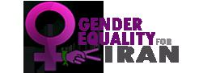

|
|
|
Browsing
Contact Us |
Campaigners |
Face to Face |
Tribune |
Interview |
News |
On the Web |
One Million |
Report
Farsi | Français | German | Italian | Spanish | العربية Also in this section
|
 Freedom and Gender Equality in Iran; Forty International Women’s Networks, Organizations and Groups Stand in Solidarity with the People of IranTuesday 9 February 2010 Over a month ago a group of Iranian women’s activists called for all defenders of women’s rights, women’s organizations and networks to take action in support of the women’s and civil rights movements in Iran, and to prepare measures of support and protest under the banner of “freedom and gender equality in Iran”. They requested, in case of repression in Iran, that these organizations act as the voices across the world of their sisters in Iran, and in that way demonstrate solidarity with them. Thus far many women’s and human rights organizations have responded to this appeal and some of them are planning events for March. Now the women of the world are calling to everyone to show solidarity with the people of Iran. Please join us. The names of individuals and organizations supporting the appeal and holding events will be announced as confirmed. Call for Solidarity: We (a group of Iranian feminists and women’s rights activists) demand an end to state-led violence and repression, as well as the immediate release of all political detainees in Iran. We invite all women’s rights defenders, activists, organisations, and networks worldwide to demonstrate their solidarity with the Iranian women’s movement and the broader movement for democracy in Iran by organising initiatives under the slogan “freedom and gender equality in Iran” throughout March 2010. Over the past thirty years, the Iranian women’s movement has been at the forefront of the struggle for freedom and equality in Iran. Gender discrimination intersects with other forms of subordination – whether based on class, ethnicity, political orientation, religion, and so on. Thus, the peaceful resistance of women and men in defence of gender equality in all social spheres – legal, political, cultural, economical, etc. – has profoundly impacted the Iranian movement for democracy. Iranian women have long demanded freedom and gender equality; they have employed both individual and group strategies, initiated various campaigns, and faced insults, threats, arrests and imprisonment in the process. Many of these women are currently in prison. Over the past eight months, the grass-roots protest movement that emerged following the disputed presidential elections has been suppressed by mounting violence. Physical and psychological violence – through arrest, torture, rape, extended imprisonment, and even execution – has been exercised against civil and political activists in Iran. As of now, numerous women activists from various movements – women’s, workers, students, civil, and political – are detained and/or have received heavy sentences. The list of detainees grows everyday. Forty International women’s networks, organizations and groups have already stood in solidarity with the people of Iran. These are: Women Living Under Muslim Laws, AWID, Women’s Learning Partnership (WLP), South Asian Women in Media, SAWM-Pakistan, Women News Network (Global), Women Intercultural Network (Global - Consultative status with UN), Black Women for Wellness, Nobel Women’s Initiative, Campaign for A Safe World For Women, Human rights watch women’s division, Sociologists without Borders, BASICS Free Community Newsletter, Gabriela-Ontario, Migrante Canada, FRANCE, Collectif Midi-Pyrénées droits des femmes, Coordination des Associations pour le Droit à l’Avortement et à la Contraception (CADAC), Marche Mondiale des Femmes 31, Ligue du Droit international des femmes cofondée avec Simone de Beauvoir en 1974, Association of the Manifesto of Liberties, Ni Putes Ni Soumises / NPNS, Osez le féminisme, Regards de femmes, Réseau féministe Ruptures, TERRE DES FEMMES, Berlin Declaration - Eva Quistorp, The network womeninmuseum, The International House of Women, The Alexander Langer foundation, Women´s Center in Florence, Women´s cultural association in Verona, il paese delle donne, L’Union de L’Action Feminine (FUA), Women in Black - Mallorca, Spain, The Kvinna till Kvinna Foundation, Feminist Initiative, Riksteatern, Tunisian Association of Democratic Women, California Women Agenda, South and West and Northen Africa Collective of KPFK/Pacifica, Campaign for Peace and Democracy, Ms Magazine (US) You too can join the effort and express your solidarity with the people of Iran as they struggle for freedom and gender equality. We invite all women’s rights defenders, activists, organizations, and networks worldwide to demonstrate their solidarity with the Iranian women’s movement and the broader movement for democracy in Iran by organizing initiatives under the slogan “freedom and gender equality in Iran” throughout March 2010. Let’s work together, in solidarity, to demand an end to the use of violence and systematic repression in Iran and call for the immediate release of all those detained and imprisoned, including women human rights defenders and civil society activists. Visit our Site: www.irangenderequality.com See our post-election arrest database |